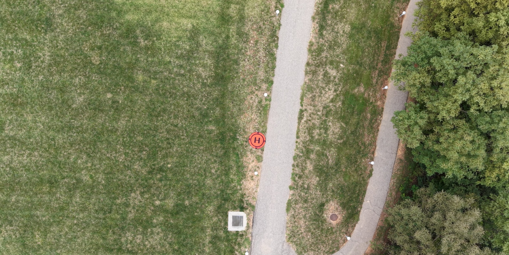
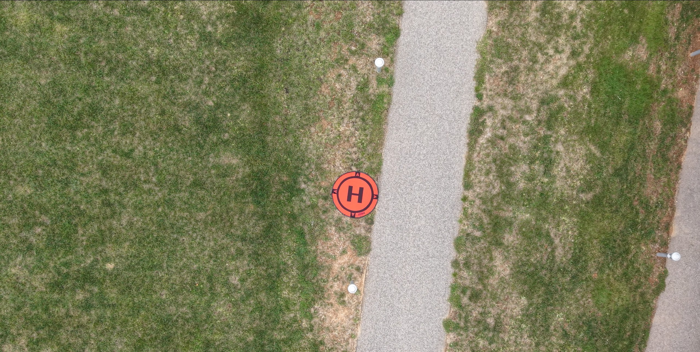
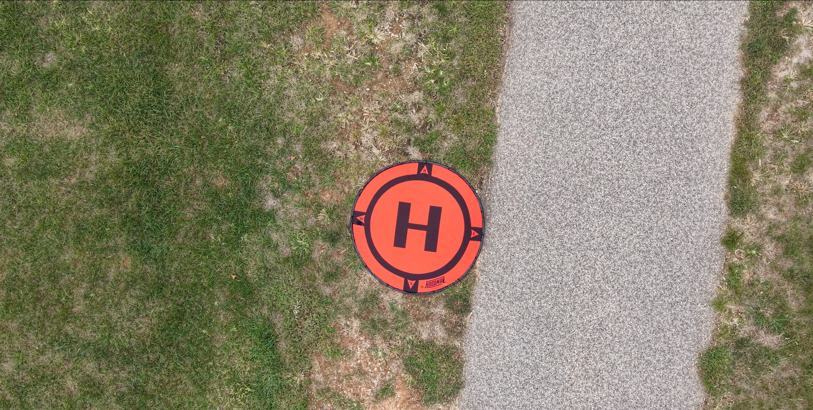
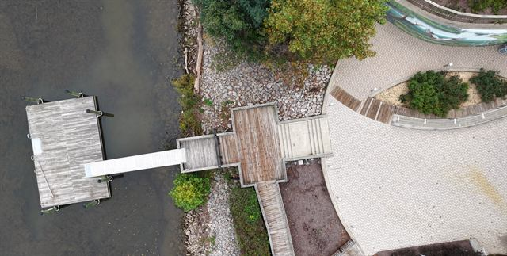
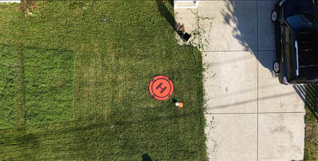
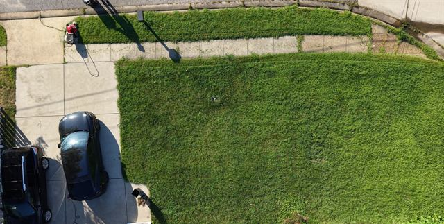

Fly a short, simulated package delivery over your home, a park, or a rooftop, then upload the video and flight log. Your footage helps researchers teach delivery drones to land safely.
Read the flight guide Submit videosAutonomous delivery drones need to recognize a safe drop spot and notice what's around it: people, pets, cars, trees. To train and test these systems, researchers need real descent footage from many places, in many conditions. This project collects that footage from volunteer pilots worldwide and releases it as an open research dataset.
2–3 short videos of a slow, vertical descent with the camera pointing straight down.
Each video file plus its matching flight log, for example DJI .MP4 + .SRT.
About 2 minutes of flying per video, plus setup.
Sample flights, with their full-length videos and flight logs, are available to browse and download on Hugging Face. Every contributed flight that passes review is added there.
Browse the dataset on Hugging FacePretend you're a delivery drone bringing a package to a house, park, townhouse, or apartment rooftop.



Please record 2–3 videos around your location, changing something each time. Variety is what makes the dataset useful.

Dawn, morning, noon, afternoon, dusk; sunny or overcast.

Driveway, front yard, backyard, rooftop, or wherever you'd want a delivery.

Cars, bikes, trees, furniture, pets, or people (only people who have agreed to be filmed).
Rules differ by country. In the US, check airspace with the FAA's B4UFLY; airports and government sites are restricted, and Washington, DC has a 15-nautical-mile no-drone zone. Elsewhere, check your national aviation authority. Never fly where it's prohibited.
In DJI Fly or DJI GO, enable Camera settings → Video subtitles (on some models: Video Caption). The drone will then save a .SRT file next to each .MP4, with the same name.
.SRT files record latitude and longitude, which can reveal where you live. We remove exact coordinates before any public release and keep the originals private to the research team.
Every submission is reviewed by the research team before it becomes part of the public dataset.
Your files go to a private folder that only the research team can see.
We check each flight for safety, the flight profile, and privacy (faces, license plates, GPS).
Approved flights are added to the dataset on Hugging Face. We'll email you either way.
Before you upload, use the checker below to confirm every video has its matching flight log. It runs entirely in your browser; nothing is uploaded at this step.
On the upload page, enter your name and email, then add all your files. Keep each video and its log file together with their original names.
Go to upload pageCheck your files and tick all three boxes to continue.